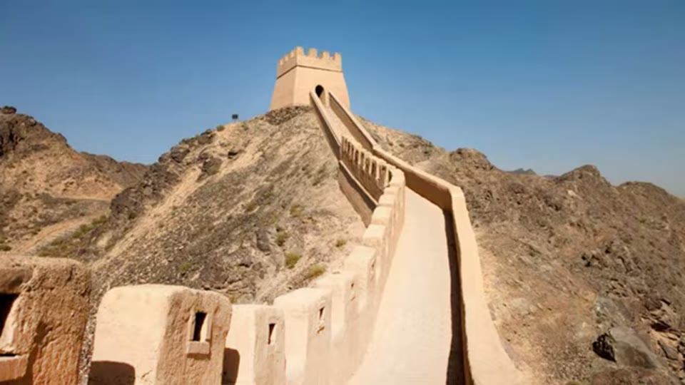
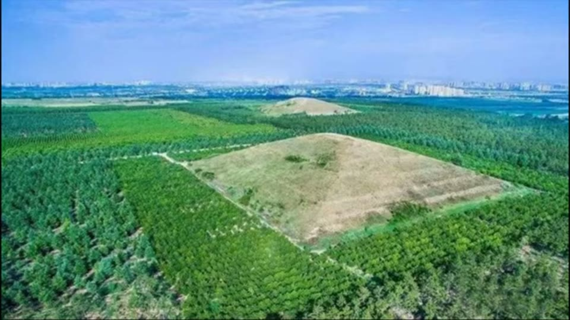

Curious Being
Chinese Pyramids: Myth or Reality Revealed
Tina · 18 min · watch on YouTube · summarised 2026-09-28
The claims, as they circulate 00:00–00:27: a white pyramid in western China said to be the largest in the world and bigger than the Great Pyramid of Giza, with a dozen more in the surrounding valley, some nearly as high.
The video is structured as four questions with four answers, and three of the four answers are no.
Where the claims came from
Three Western sightings, given with names and dates 00:27–01:33:
| 1912 | Fred Meyer Schroder, an American trader travelling with a guide through Shaanxi Province, records a giant flat-topped pyramid about 1,000 feet tall surrounded by smaller ones |
| c. 1945 | James Gaussman, a US Air Force pilot, reports a "shimmering white" structure over western China, said to be twice the size of the Great Pyramid |
| 1947 | Maurice Sheahan, a US aviator, sights a giant pyramid over Shaanxi not far from Xi'an and photographs it. Several US newspapers including the New York Times carry the story in March 1947 |
Chinese archaeologists denied there were pyramids, and she explains why that was not a cover-up 01:33–01:55: to Chinese readers these are not pyramids but emperors' tombs. They are Han dynasty burial mounds, and the Han ruled for four centuries, 206 BC to 220 AD.
Putting a mound over a buried tomb is a Chinese practice she traces back at least 2,700 years, and one still followed in rural areas today 01:55–02:34. The imperial version is simply the grandest: pyramidal with a flat top, and originally carrying memorial structures whose foundations are all that remain.
The valley
The mounds stand at Xianyang, in the Wei valley, which holds two ancient imperial capitals — Xi'an and Xianyang 02:34–03:36. Her geography for why it matters: the Himalaya occupies the south-west, the Taklamakan desert the west and the Loess Plateau the north, so this habitable corridor was the land route linking Persia, Mesopotamia and the Greek and Roman world to China. Xi'an, then called Chang'an, was the eastern terminus of the original Silk Road 2,200 years ago and a capital comparable to Rome in the same period.
More than 30 emperors are buried in the valley along with thousands of royal tombs, which is why she calls it the Chinese Valley of the Kings 03:59–04:10.
Why the tombs came with towns
The why answer she spends longest on, and it is not about the pyramids' shape 04:10–05:12. Han imperial mausoleums were not isolated monuments: each was laid out with large residential and commercial neighbourhoods attached. Once a mausoleum was planned, the emperor moved thousands of families — military, aristocracy, officials, wealthy merchants — into the new district.
Her reading of the purpose is practical. It guaranteed guards, maintenance labour and surveillance for the tomb. And because the mausoleums lie west of the capital, the resulting settlements formed a line of fortified satellite towns blocking that approach. Living in one was a mark of status.

Each imperial mausoleum came with a populated town attached to it.
Question 1: a 1,000-foot pyramid, bigger than anything in Egypt?
Her answer: myth 05:24–07:46.
Two arguments. The first is from the written record: Chinese official chronicles took great care over this kind of documentation, and the mausoleums' sizes, heights and locations are recorded in the chronicles and in popular poems. Nothing anywhere near 1,000 feet is recorded in either.
The second is about how the estimate was made. In 1912 the valley was flat open farmland with buildings one or two storeys high, so a large man-made mound would look far bigger than it is. Estimating a structure's height works by comparison — she uses a sculpture twice a man's height to put it at about 3.5 m / 11.5 ft, and mentions measuring a distant structure against a pencil as an artist does. There was nothing of comparable size near the mound to measure it against, so no good estimate was available. The pilots' figures, made from a moving aircraft, she treats as weaker still.
Question 2: how big are they really?
The comparison, which she also calls a myth 07:46–09:02:
| built, as her slide gives it | height | base | |
|---|---|---|---|
| Khufu, Giza | 2580–2560 BC ? | 146.7 m / 481 ft | 230.34 m |
| Maoling, the largest Chinese mound | 87 BC | 46.5 m / 153 ft | 243 × 239 m |
| Sun Pyramid, Teotihuacan | 200 CE | 65.5 m | 224 × 220 m |
The figures are printed on screen, so the surprising part can be checked without leaving the video. On height the Chinese mounds are not in the contest — Maoling is under a third of Khufu. On footprint all three land within about 8% of each other, and Maoling's is the largest of them. She flags that as curious — three pyramidal structures on three continents with bases of similar size — and leaves it as an open question rather than an argument.
The question mark after Khufu's date is hers, and it is the only mark of doubt on the slide.


How the largest Chinese mound actually compares with Giza and Teotihuacan.
She adds a claim of her own here, the only place in the video where she argues for the alternative side rather than against it 08:55–09:28: Giza's bases are exact squares, the Chinese mounds were designed square but not executed as precisely, and she assumes the same of the Sun Pyramid. Giza is much older and far more precisely built than either — which she offers as support for the idea that the Giza pyramids are the work of an earlier advanced civilisation.
Question 3: is there a White Pyramid?
Her answer: yes and no 09:45–11:41.
There is no white, light-reflecting pyramid. What there is, on her account, is a question of surface and season. The Han mounds are built of layers of rammed earth, eroded over time and quarried by local people for brick-making. Today they read dark green, because conifers and grass were planted on them to stop the erosion. Before that forestation they were bare compacted rammed earth — tan or beige, and she puts up a photograph of an old rammed-earth stretch of the Great Wall as the colour reference.

What rammed earth looks like when it is not under vegetation.
Her evidence is a piece of footage of a mound that has not been planted with conifers: against the dark wooded ground around it the mound reads much lighter, and the paths running up it read as white. From the air, on bare earth, she argues that is what the 1945 pilot saw.


Bare mounds read pale against the planted ground around them.
Question 4: are they laid out to match Orion?
Her answer: no 11:41–14:36.
She states the Orion correlation theory fairly first — the three largest Giza pyramids against Orion's Belt, placed deliberately, with Orion associated by the Egyptians with Osiris.
Then what the Wei valley actually contains. Over ten large Han mounds, roughly on a line that follows the Wei River. Inside each mausoleum there are usually several mounds: the emperor's largest, then empresses, secondary wives, generals and relatives — and some empresses' mounds are the same size as their husbands'. She suggests that is where the Orion idea comes from: two adjacent equal mounds look like Khufu and Khafre.
Her test is a direct one. She puts the two complexes side by side: the Chinese layout does not match the Giza layout, and the Giza layout does match Orion's Belt. She then shows aerial photographs of other Han mausoleums with the mounds highlighted, and none matches the Belt either.

The two complexes do not share a layout.
The structural objection is the stronger half 13:38–14:36. A mausoleum's mounds were built at different times, as royals died. There was no fixed rule about who was admitted — it was the emperor's personal decision — no set number of burials and no set placement. "The burial custom is more like arbitrary art rather than precise science." You cannot lay out a constellation when you do not know in advance how many stars you will need or when each will arrive.
Question 5: ley lines, then?
Her answer: unlikely 14:36–16:20. The proposal she addresses is that the mounds form part of a system of sacred Fengshui lines, analogous to ley lines.
Three objections. No historical record confirms the tombs were positioned by Fengshui. The Han mounds are not actually on the same line. And folklore has at least one emperor choosing his resting place because he saw a sacred animal there while hunting — personal preference, not a grid.
Her alternative explanation. Burying emperors of one dynasty in a row is normal Chinese practice; she shows maps of the tombs of the 18 Tang emperors and the 13 Ming emperors, roughly aligned and grouped in both cases. The reason is a shared siting rule: every tomb is backed by mountains and faces a river, and none blocks another's view of the mountains or the river. Apply that rule repeatedly along a valley and the tombs line up without anyone drawing a line.

Tombs of one dynasty line up because they all want the same thing: hills behind, valley in front.
What is under the mound, and why it is still there
Beneath the mound is the emperor's coffin 16:20–17:51. Han tombs were famously lavish, which is why most have been looted repeatedly.
The reason the rest are unexcavated is a conservation failure. Decades ago officials opened tombs without the archaeological training or the preservation technology to handle what came out, and within minutes or seconds coloured silk, brightly painted terracotta figures and bamboo books disintegrated or darkened beyond recognition. Chinese authorities then stopped further excavation until the funding and techniques exist, with salvage digs only when tomb raiders get there first. She closes on a loss that is not reversible either way: mausoleums built over by residential development, with no record of what was bulldozed.
What you can check yourself
- The heights. 146.7 m, 65.5 m and 46.5 m are published figures for three of the most measured structures in the world.
- The base dimensions. The claim that the three bases are close in area is the one genuinely surprising number in the video, and it is checkable in minutes.
- The March 1947 newspaper coverage of Sheahan's sighting, the New York Times included, is archived.
- The Han chronicles. That imperial records give the dimensions and locations of the mausoleums is the load-bearing claim of her first answer, and Chinese historical texts are published and translated.
- The painted terracotta. That excavated polychrome figures lose their pigment within minutes of exposure is documented at Xi'an and is the stated reason for the excavation moratorium.
- The Tang and Ming tomb maps. Both groups are mapped, and whether each tomb has mountains behind and a river in front is visible on any terrain map.
What the video does not settle
- No source is given for any of the three sightings. Schroder, Gaussman and Sheahan are named and dated; no book, report, archive or photograph credit appears for any of them. The Gaussman account in particular is the origin of the "white pyramid" and is passed on here as reported rather than examined.
- The Sun Pyramid at Teotihuacan is called "the Mayan Sun Pyramid" in the narration 08:47. Teotihuacan is not a Maya site. The slide running underneath that sentence is correct — it labels the structure "The Sun Pyramid, Mexico" — so the error is spoken and not repeated on screen.
- "The Giza pyramids' bases are exact squares" is asserted without a figure or a source, and it is doing work in her one pro-alternative argument. Her own slide gives Khufu a single base figure and the other two a pair each, which is consistent with the claim but is not evidence for it — no tolerance, survey or source appears.
- The base-size coincidence is raised and dropped. The numbers are given and they do what she says; what is missing is any reason to think three similar footprints mean anything. No argument is offered and none is ruled out.
- The rammed-earth colour argument is an inference from modern drone footage, not from any image dating to the sightings. The colour reference is a photograph of the Great Wall, not of a Han mound, and the stretch shown is smooth-surfaced and evidently restored rather than a weathered ancient face.
- The two aerial comparisons are not like for like. The Giza half is a modern colour satellite image and the Chinese half a 1947 black-and-white air photograph, at different scales, with no scale bar, north arrow or common orientation on either. The layouts plainly differ; the picture cannot support a closer comparison than that.
- The follow-up aerials do not show what she says she has done to them. She states that she has highlighted the mounds "to be more legible"; the satellite screenshots that run under that sentence carry Google's own map labels and no highlighting, and at that zoom the mounds are hard to separate from the field pattern.
- No dating evidence of any kind appears. The Han attribution is stated as established and not argued, so nothing here bears on when the mounds were built.
- "Some scholars believe" the Fengshui line theory without any being named.